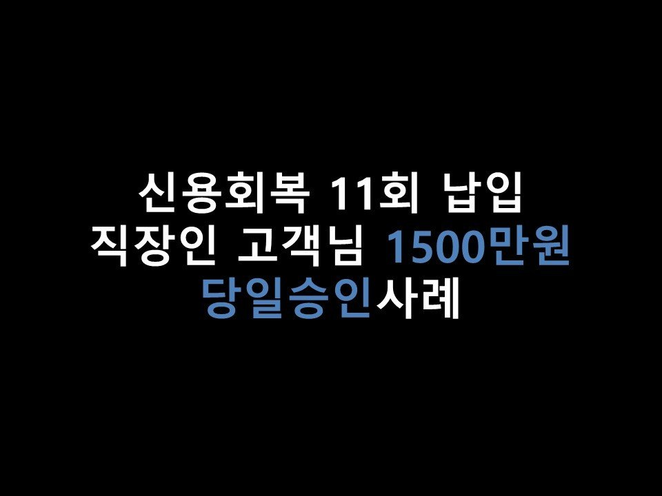
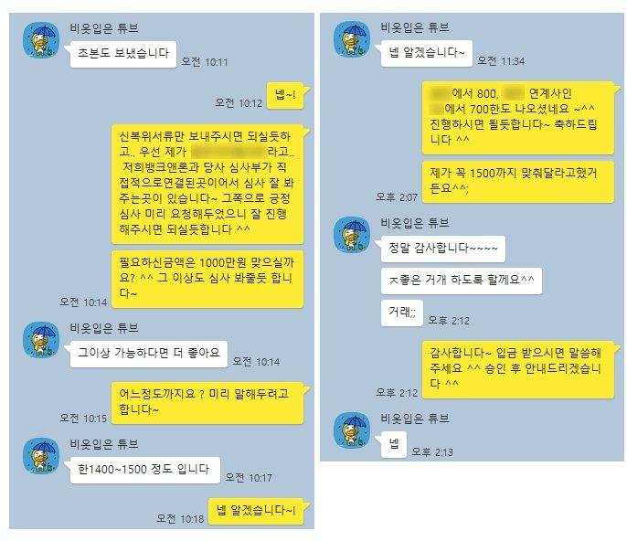

★신용회복 11회 납입 직장인 고객님 1500만원 당일승인사례★

안녕하세요 ~! 오늘은 신용회복중이신 고객님의 대출승인사례를 소개해드리겠습니다 ^^
고객님께서는 현재 4대보험 가입된 직장에서 1년 10개월 근무, 월 급여는 평균 300만원 수령중이셨습니다.
현재 개인워크아웃 월 변제금은 21만원, 96회중 11회납부(유예없이), 미납은 없으셨습니다.
이용중이신 대출로는 신용회복위원회 소액대출 188만원 가량 소유하고 계셨습니다~!
고객님께서는 1500만원의 필요자금이 생기셔서 저희 뱅크앤론으로 문의를 주셨습니다.
고객님의 상황을 보아 신용회복자대출상품으로 충분히 한도 가능하실듯 보여
승인률이 좋은 금융사중 한곳인 G사로 접수를 도움드렸습니다 ^^.
그 결과 G사에서 800만원, G사 연계사인 O사에서 700만원 총 1500만원의 한도가 나오게 되었습니다 ^^
한도 산출 후 바로 진행을 요청한 결과, 상담신청 당일 입금까지 도움드릴 수있게 되었습니다~
아래는 저와 고객님의 카톡 대화내용입니다. 참고 부탁드립니다 ^^
